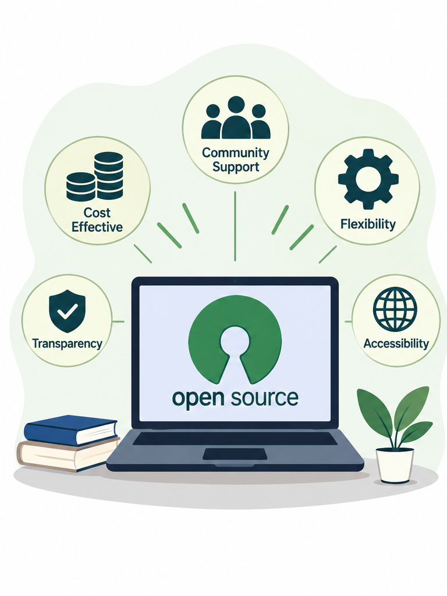
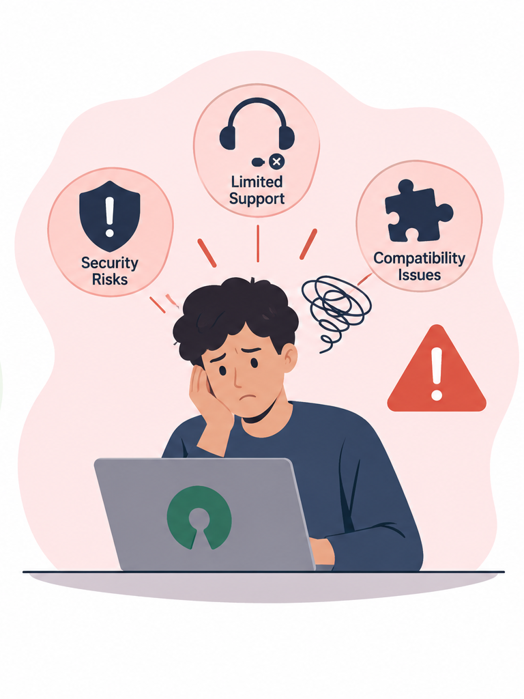

The Advantages of Open-Source Software

Discover how open-source software supports accessibility, collaboration and flexibility in education and everyday life.
Read moreLoading...

Discover how open-source software supports accessibility, collaboration and flexibility in education and everyday life.
Read more
Explore some challenges of open-source software, including technical support, security and compatibility.
Read moreLearn how Voyant Tools can help English Studies students explore word patterns and analyse literary texts.
Read more